Twenty years building maintenance operations for industrial processing and manufacturing. 3,000+ assets across multiple sites. My professional life is CMMS implementation, predictive maintenance, environmental compliance, and building data pipelines to help make the invisible parts of operations visible.
Lifelong violinist and drummer. Listening habits run from Mozart to Meshuggah, Grappelli to Gojira, Brahms to Beastie Boys. Stipple artist and illustrator. VW tuning enthusiast. Custom watchmaker creating full builds from sourced movements, cases, and hand-painted dials. Trained audio engineer with a project studio. The common thread is a simple curiosity of how things work and when possible, exploring how I can leverage tools within reach to go deeper.
Self-taught technologist since my first DOS command on a Commodore 64. Built Geocities sites before Google existed. Decades of hands-on experience across personal, business, and creative software categories. Now building AI-assisted tools, industrial IoT pipelines, and workflow automation. Still just as curious about what the next command does. Active member of the Association for the Advancement of Artificial Intelligence (AAAI).
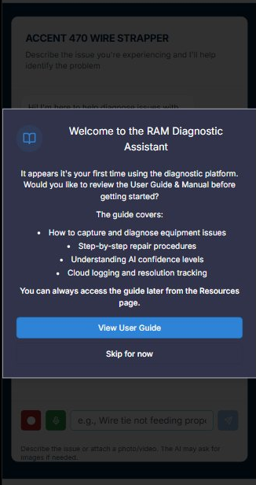
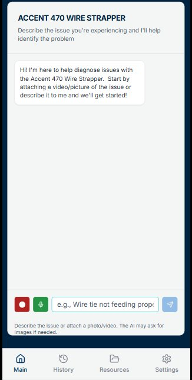
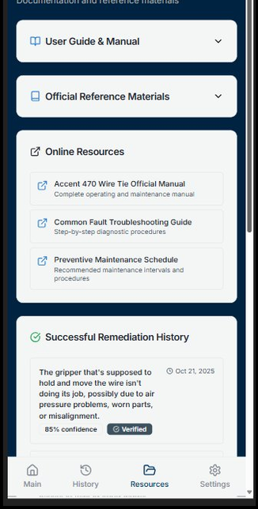
An AI diagnostic coach that walks maintenance technicians through fault identification and repair on niche industrial equipment. Built around manufacturer service manuals for an industrial wire strapping system — the kind of machine where institutional knowledge lives in one person's head until they retire. The interface guides rather than guesses: asking for specific photos mid-conversation, presenting conditional decision trees, and citing exact manual references.
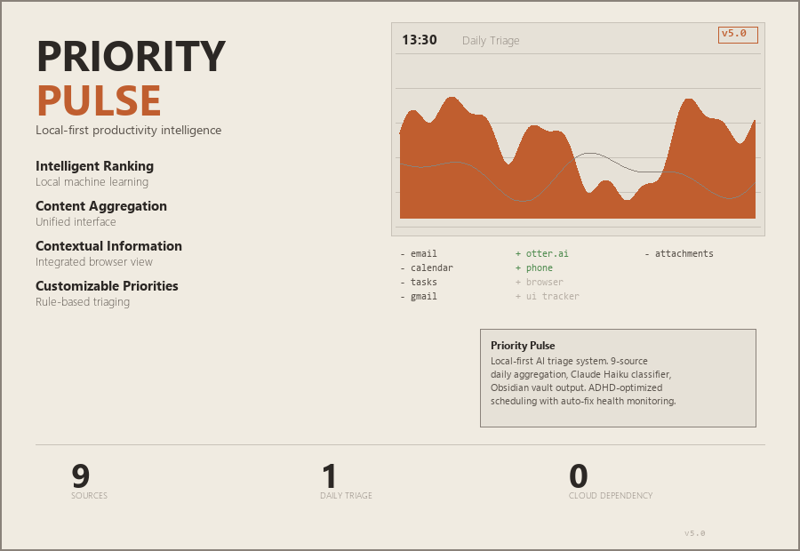
A local-first productivity intelligence system built for ADHD brains in high-interrupt operational roles. Passively collects data from nine sources throughout the workday — UI activity, email, calendar, meeting transcripts, phone calls, browser history — packages it into a consolidated daily analysis file, and delivers AI-triaged feedback via the Claude API. Surfaces dropped tasks, flags strategic drift, and provides honest time-allocation analysis. No cloud, no telemetry.
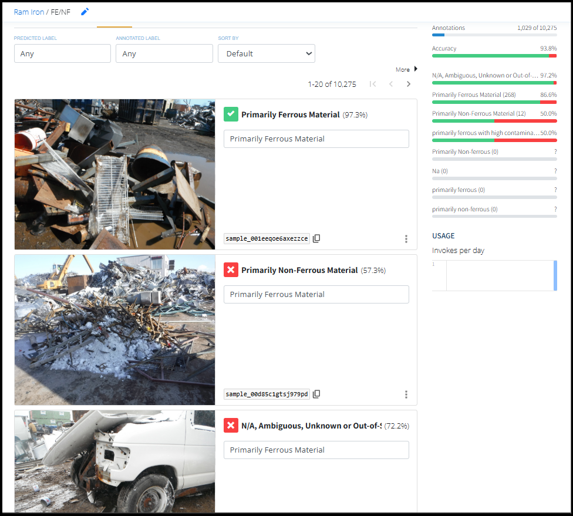
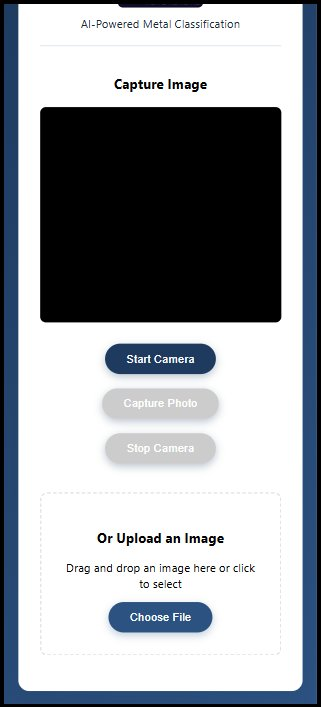
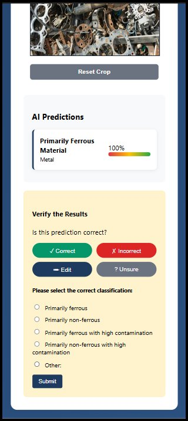
A mobile classification tool that helps yard workers identify scrap metal grades on the spot. Trained on 15,000+ images using Nyckel, achieving 98–99% accuracy on broad material categories and 78%+ on subcategories and contamination detection. The model improves continuously because the people using it are the ones training it — expert corrections on the floor feed directly back into the training pipeline.
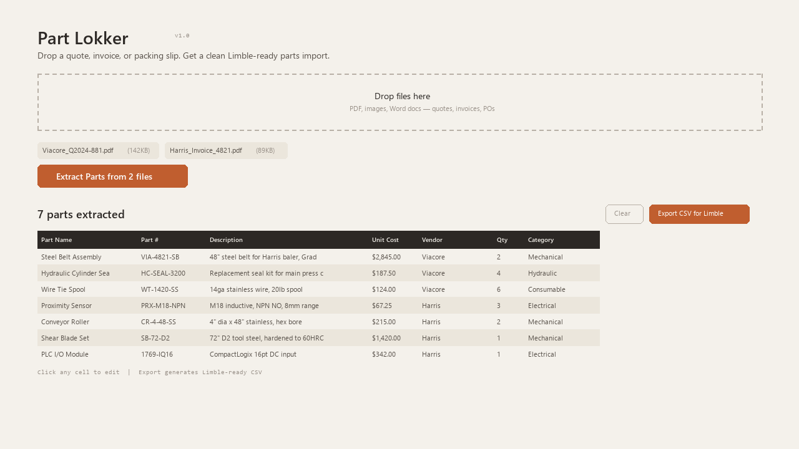
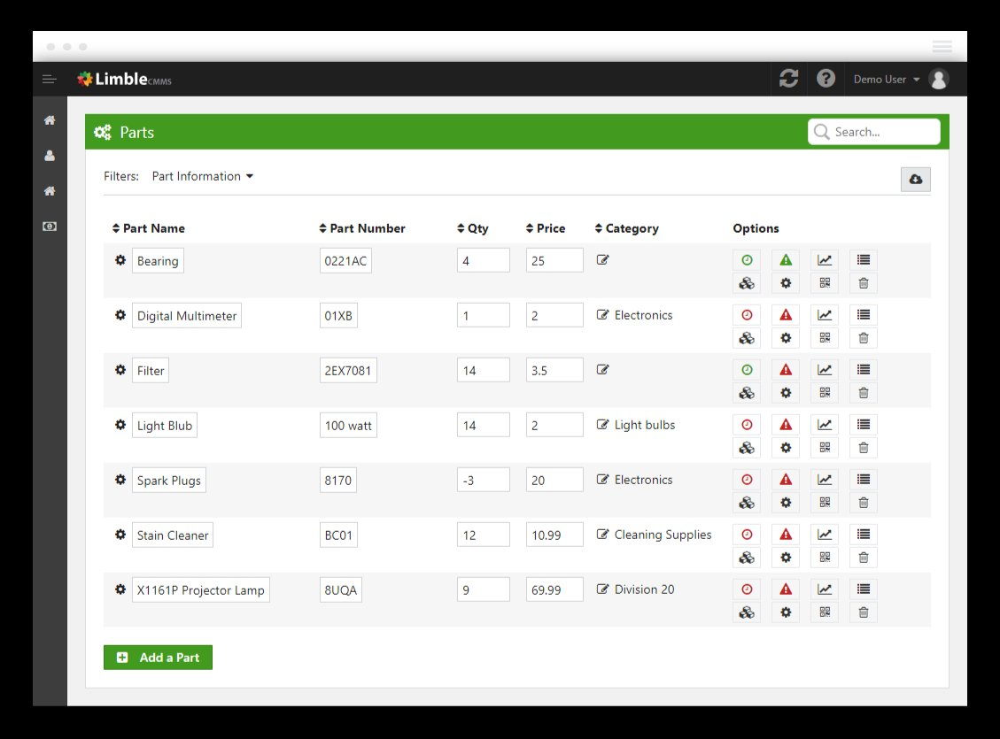
Drop a photo of a quote, invoice, or packing slip and get a clean, ready-to-import file for your CMMS. Eliminates the manual data entry bottleneck in parts management — technicians photograph a vendor document on the shop floor and the system extracts part numbers, descriptions, unit costs, and vendor details into a formatted spreadsheet that maps directly to the CMMS import specification.
VR applications with two focus areas: rapid-access sensory environments for students experiencing autism-related sensory overloads at school, and custom-built immersive experiences for long-term and palliative care patients. Validated ROI thesis with Peel Region special education teachers and a Toronto District School Board senior manager. Three-person founding team: prototyping and production (Luke), business development (Sr. Director, Canadian division of a publicly traded company), and operations/legal.
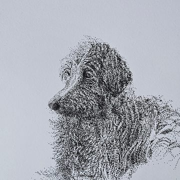
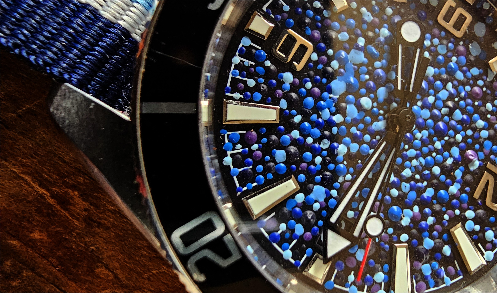
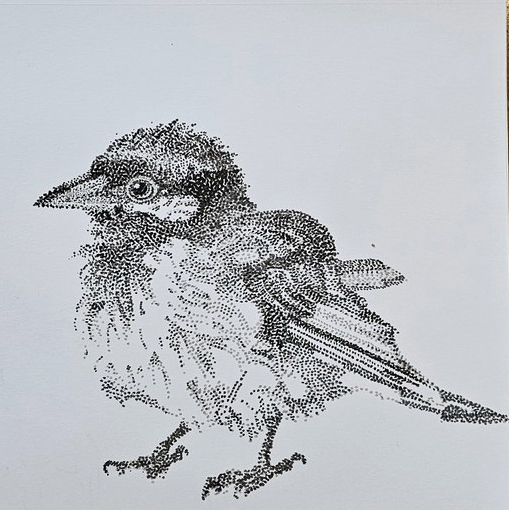
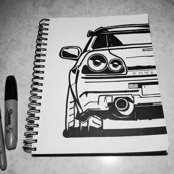
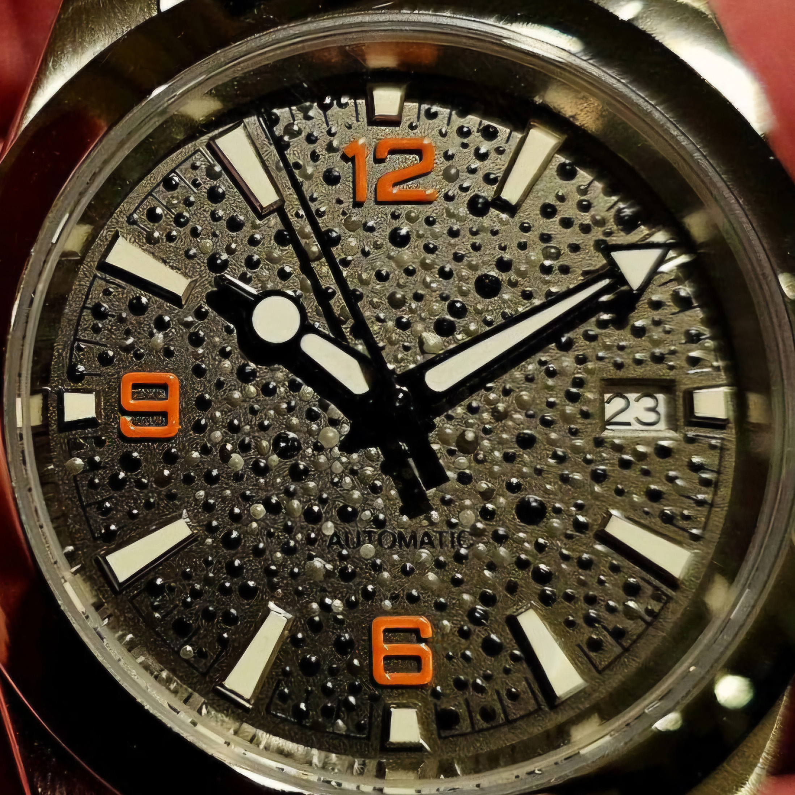
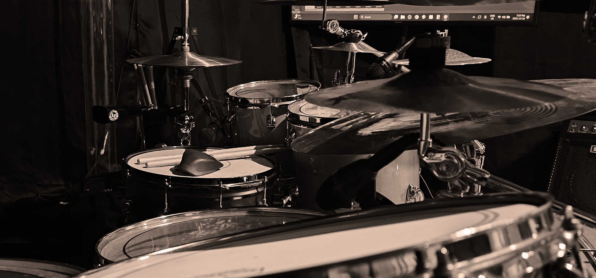
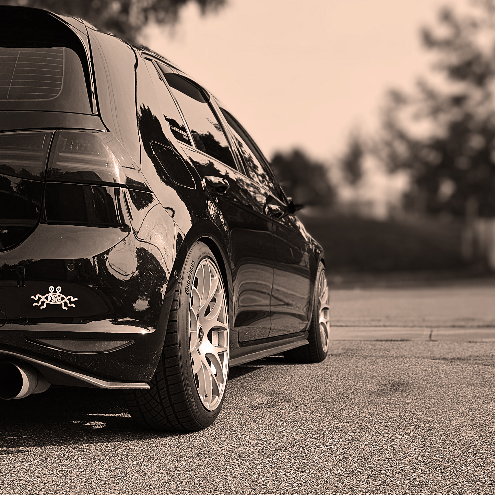
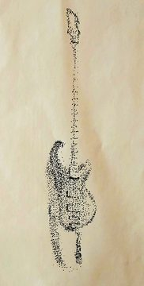
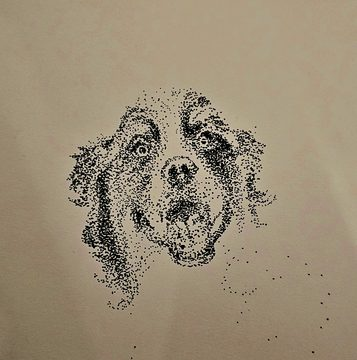
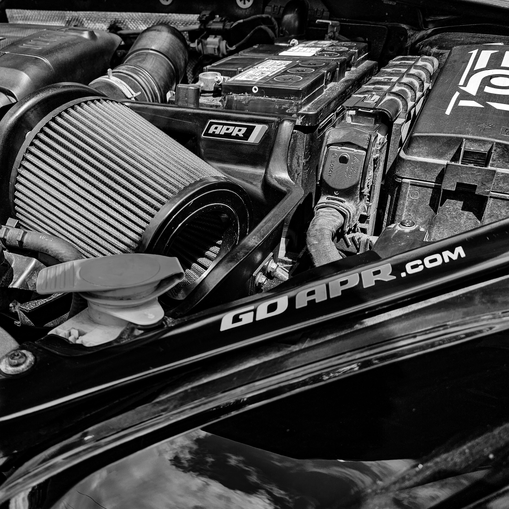